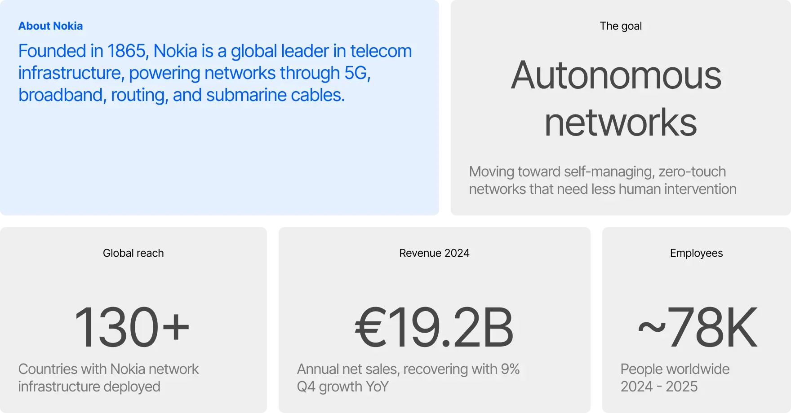
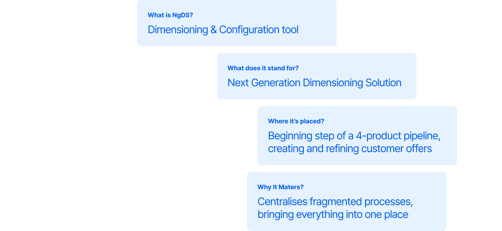
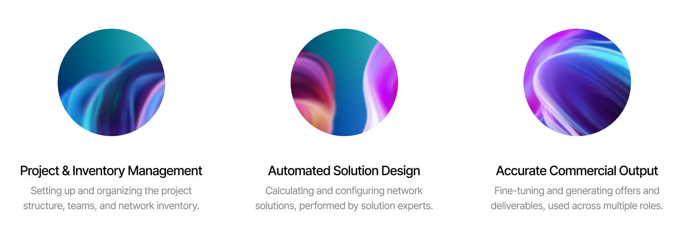
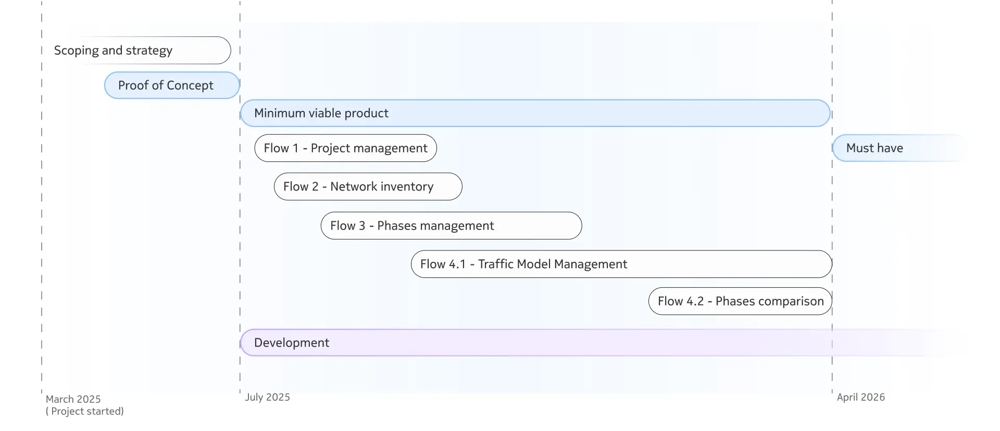
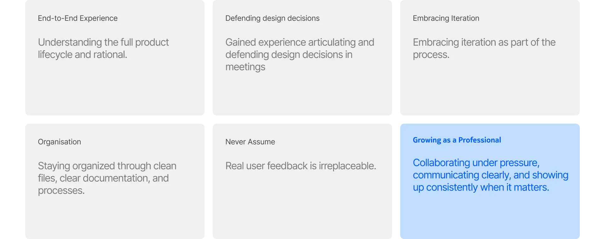

My Time at Nokia — NgDS
Nokia • IxD Trainee • 2025–2026 • Enterprise B2B • Internal Tooling

Context
Nokia is a Finnish technology company focused on telecommunications infrastructure, helping operators automate and optimise their networks, moving toward systems that are self-managed and require minimal human intervention.

The Problem
A process held together by spreadsheets
Nokia’s shift from a hardware vendor to a software-first network company is reshaping how internal teams operate. NGDS emerged as an internal tool to support this transition, enabling faster and more precise network planning and configuration.
Network engineers still rely heavily on disconnected spreadsheets and manual workflows to calculate and configure network resources. This approach is time-consuming, prone to error, and difficult to scale—highlighting the need for a more integrated and reliable solution.

Use cases
One platform to centralize it all
NgDS centralizes and automates that fragmented process into one platform. Based on the design process and research, three primary use cases were identified to support different roles across the network design workflow, each corresponding to a distinct stage, from initial project setup to final commercial output.

The Process
The MVP phase
We began by mapping user flows and introducing system diagrams to align design, product, and engineering. Early requirements were unclear, and the team was undergoing restructuring, so these artefacts helped create a shared understanding of the system and reduce ambiguity.
From there, the work consolidated into three core areas: project management, network calculation and configuration, and client-facing outputs. These flows defined the structure of the product and guided design decisions.
Given the constraints of the MVP, many decisions became fixed once implemented. The process shifted from exploration to precision, understanding where iteration was possible and where it wasn’t.

My contribution
Additional design initiatives
Apart from the main design work, I contributed to several additional initiatives:
Welcome Kit: Built an onboarding framework for NGDS that later became a template adopted across other platform products in the pipeline.
QA Framework: After the beta release, I helped build a review system to compare implemented screens against designs, categorizing issues by severity.
Usability Testing: Defined design goals and KPIs for the beta testing phase, participated in user interviews and synthesis.
Card Sorting Workshop: Planned and facilitated a session to identify structural gaps and prioritize issues before usability testing.
Component Library Audit: Managed the NGDS component library and, following MVP stabilization, led the integration of its components into the main product component library and sometimes to the NDS (Nokia design system).
Limitations & next steps
Key Takeaways
This project gave me end-to-end exposure to the product lifecycle, from deciphering requirements to designing screens, handing off, running QA, and iterating based on real feedback. Working closely with the team taught me how product decisions actually get made, and when it's worth pushing back.
I learned that iteration isn't a setback, it's the process. That staying organised in a fast-moving environment isn't a nice-to-have, it's what keeps the work moving.

What needs to be explored further
- Iterate on key screens based on usability testing feedback
- Build personas to better inform future design decisions
- Formalise and automate the QA process
Get in Touch
This case study covers what I'm able to share publicly. If you'd like to see more or talk through the process, feel free to reach out.